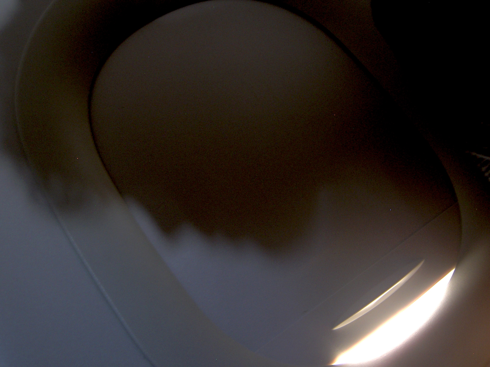

eens of ooit (2026)

- zwaluwen 3:46
- einde vd rit 2:18
- beitel 3:08
- pesten om 3 1:49
- ergens (met Johnny Loves Me) 2:42
- 1/2 eclips 3:14
- deze dans 1:44
- de droogte 5:25
Credits: thijs jenster, joris jenster (nr. 3), liam hekkert (nr. 3), jonathan bergsma (nr.5)